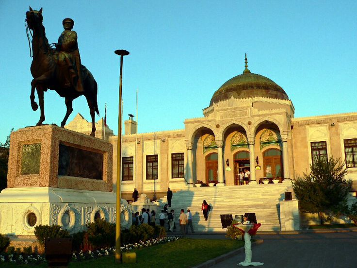

Ankara
Bozkırın kalbinden yükselen başkent Ankara, Cumhuriyet'in güçlü sesi.
Ankara, Türkiye'nin başkentidir ve Cumhuriyet'in simgesidir.
Anıtkabir, Mustafa Kemal Atatürk'ün anıt mezarı olarak Ankara'dadır.
Ankara kedisi, şehrin sembolik hayvanlarından biridir.

Anıtkabir
Türkiye Cumhuriyeti'nin kurucusu Mustafa Kemal Atatürk'ün anıt mezarı.

Etnografya Müzesi
Türk kültürünün zengin mirasını yansıtan önemli bir müze.

Cumhuriyet Eğitim Müzesi
Eğitim tarihimizin önemli belgelerini barındıran müze.
Döner
Ankara'nın ünlü döneri, ince ince kesilmiş etlerin odun ateşinde pişirilmesiyle yapılan nefis bir lezzet.
Beypazarı Tatlısı
Ankara'nın Beypazarı ilçesinin meşhur tatlısı, yufka arasında ceviz ve şerbetle yapılan lezzetli bir tatlı.

Ankara Tava
Özel et ve sebzelerle yapılan, Ankaralıların vazgeçilmez yemeklerinden biri.